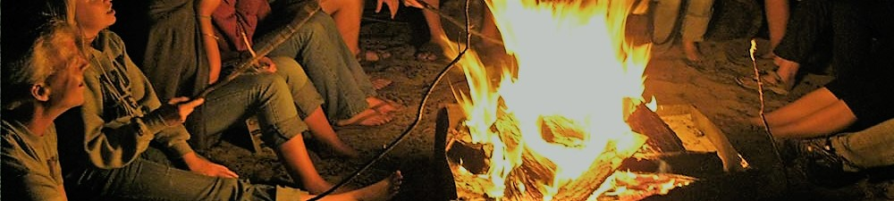

Events
Campfire Party
Campfire party will happen on the first Friday of each month. There is a professional team to give a preference. And the game part is very impressive. The winner will get a coupon as a present. We glad everyone to come join the activity and everything is for free.
Golf Tournament
While most sports have variations of ways to play, like 3-on-3 for hockey, golf has seems to have more than any other sport. The good news is that means you can come up with lots of ways to add new levels of challenge and fun to a tournament. The bad news is you have a lot of tournament games to consider. Here are just a few:
1. Shotgun Start
If you have a lot of golfers in your tournament, a shotgun start is a great way to avoid having anyone wait around to begin play. In a shotgun start, all groups begin their round simultaneously by teeing off from different holes on the course. Their tee-off hole becomes the first hole in the round for the foursome. If you have a day-long tournament, the shotgun format means you can host the tournament for 120 or more golfers
2. Modified Shotgun
If you have fewer players, even not enough to start a group at every hole, but you still want to minimize waiting times and the overall time it takes to run the tournament, a modified shotgun format is the answer. Just like a shotgun start, all your groups will start and end the tournament at the same time, but there will be additional public and member golfer play surrounding your event. Your golfers must also maintain a certain pace of play so as not to interfere with the surrounding golfers.
3. First Tee Start
Like the name implies, groups in a first tee start tournament tee off in from the first tee one after the other. This is a great format for smaller groups whose golfers may be more familiar with each other as it allows more time for socializing and even a bit of friendly banter at the end of the round when golfers can cheer each other on from behind the 18th.
4. Nine Hole Event
One of the main reasons many companies and organizations avoid staging golf tournaments, despite the game’s popularity within the organization, is the amount of time it can take to play a round of golf. Try as they might, perhaps the biggest logistical goal of any tournament is to find a common time when all your invitees can spare the amount of time it takes to play a full round of 18 holes, and take part in any pre- and post-tournament festivities. If you want to enjoy all the benefits that come from hosting a corporate or community golf tournament, but you want to minimize the time commitment needed to participate, a nine-hole event gives you the best of both worlds.